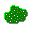

Over Chip's Challenge
C
hip's Challenge is een puzzelspel dat oorspronkelijk werd uitgebracht in 1989. Het spel volgt de avonturen van Chip McCallahan, die door verschillende niveaus moet navigeren om microchips te verzamelen en puzzels op te lossen.
Gameplay
I
n elk niveau moet Chip een bepaald aantal microchips verzamelen om de uitgang te bereiken. Onderweg moet hij obstakels vermijden, sleutels verzamelen om deuren te openen en verschillende puzzels oplossen.
Populariteit
C
hip's Challenge heeft een cultstatus bereikt onder retro gamers en blijft populair vanwege zijn uitdagende verslavende gameplay.
Monsters
E
r zijn verschillende soorten monsters in het spel, ±10 in totaal. Hieronder vind je een oplijsting van enkele van hen.
Bug
De Bug beweegt zich in een rechte lijn en verandert van richting wanneer hij een obstakel raakt.
Blob
De Blob beweegt zich willekeurig en kan moeilijk te voorspellen zijn.
Fireball
De Fireball beweegt zich in een rechte lijn en kan door vuur lopen zonder schade op te lopen.